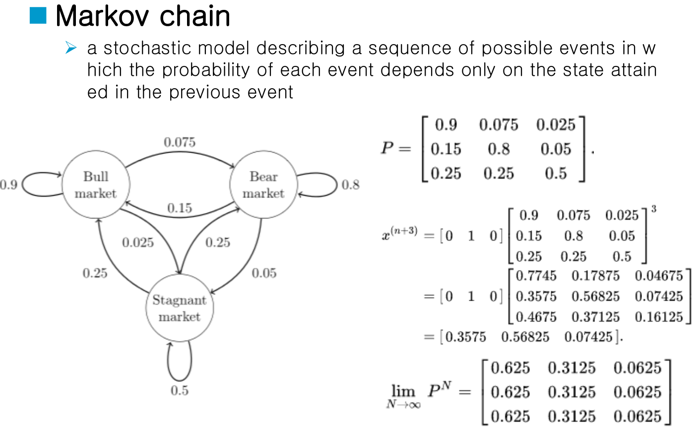
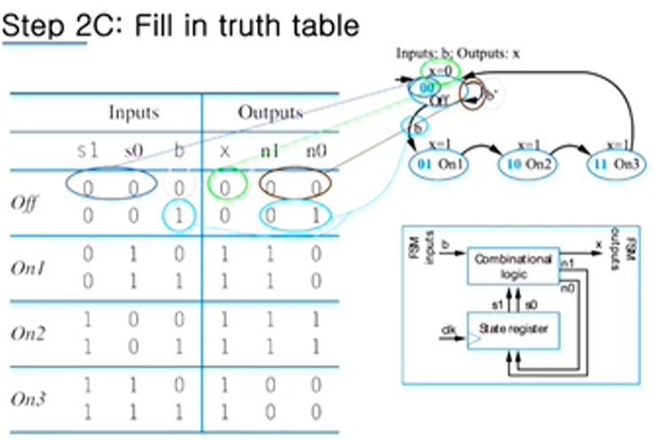
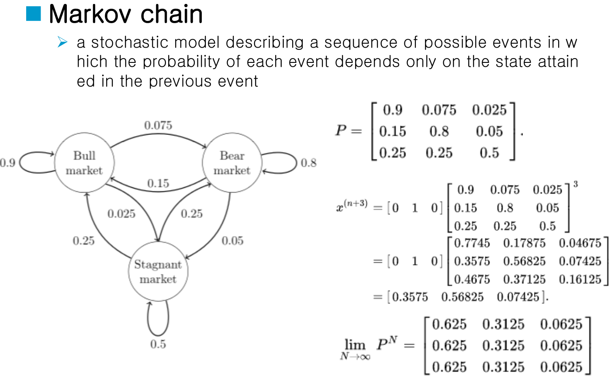
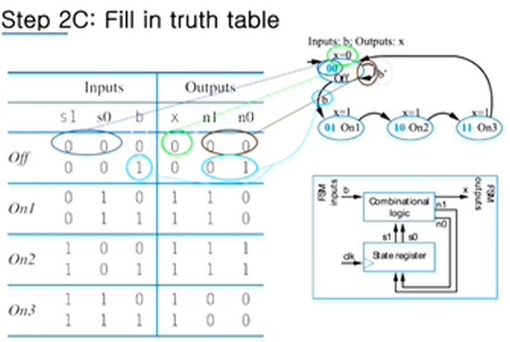

Digital System Circuits week 14
Stochastic process

FSM definition
FSM example: secure car key
How to capture desired behavior as FSM
Controller design
Controller design process
Controller design: laser timer example

Siyun Min
December 7, 2021

